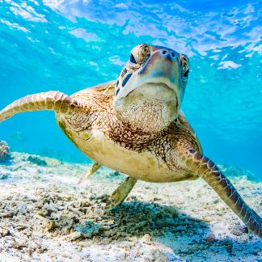
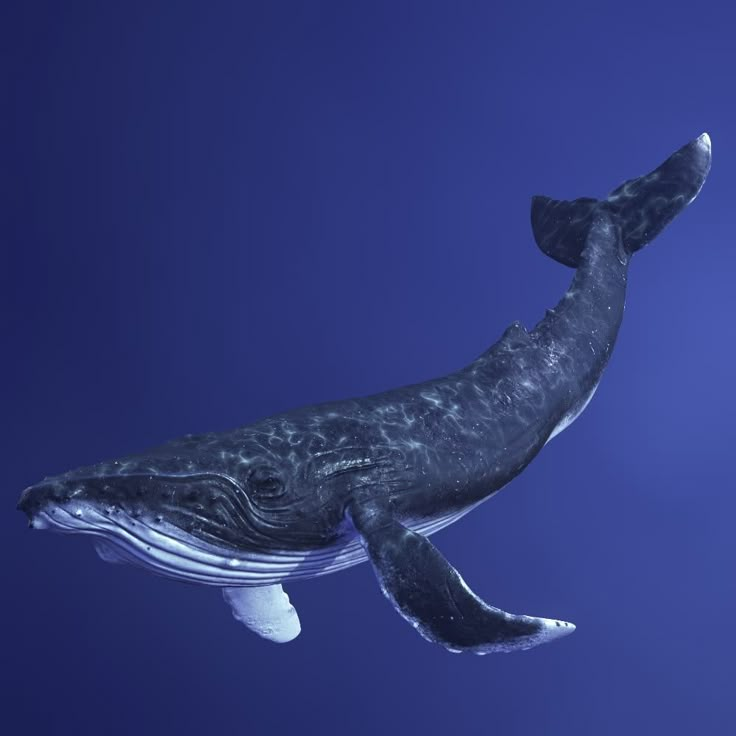
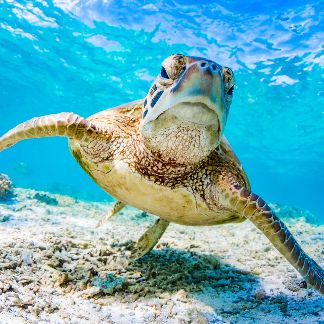
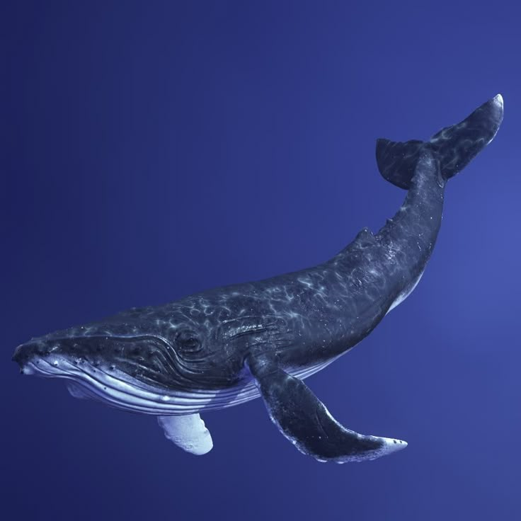

O Fascinante Mundo Marinho
Explore fatos incríveis sobre os organismos que vivem nos oceanos. A biologia marinha estuda desde microrganismos até baleias gigantes.
🐙 O polvo tem três corações e seu sangue é azul!
🐋 A baleia-azul é o maior animal do planeta – pode chegar a 30 metros!
🐠 Alguns peixes-palhaço mudam de sexo durante a vida.
🦈 Tubarões existem há mais de 400 milhões de anos.
🌿 Os recifes de coral abrigam 25% da vida marinha, apesar de ocuparem menos de 1% do oceano.
Veja também:
assista a um víeo cheio de curiosidades interessantes!
"allowfullcrn> 


